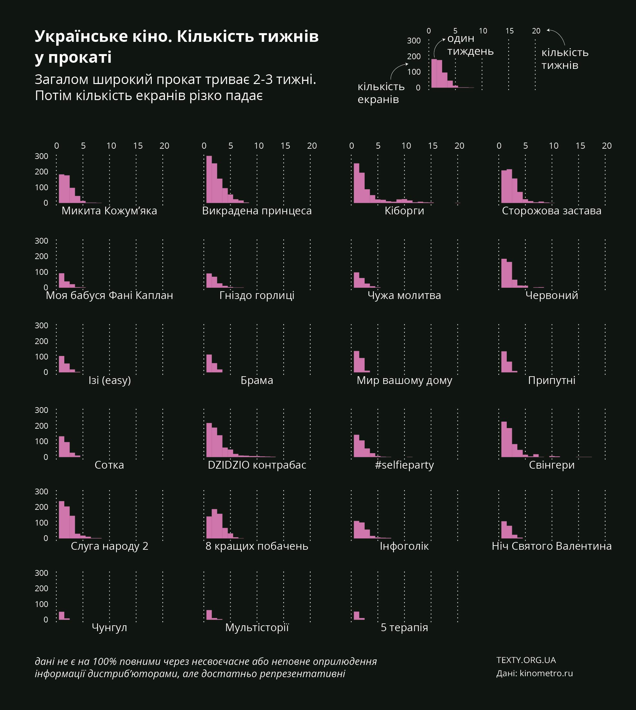

Сьогодні найбільша похвала для вітчизняного кіно – фраза на кшталт «Ніколи б не подумав, що це українське». Саме таку стрічку у 2016 році зняв український режисер Любомир Левицький. Без жодних претензій на щось серйозне і вічне, суцільний фан в американському стилі, «#Selfiparty» («Селфіпаті») – розповідає про чотирьох друзів-студентів, які прокидаються в поліцейському відділку, не пам’ятаючи подій учорашнього дня.
Біля будинку, де хлопці влаштували вечірку, знайшли труп. Щоб згадати, що трапилось минулої ночі, вони вирішують зібрати всі фото та відео з хештегом #selfiparty. Малобюджетна комедія отримала купу похвальних відгуків і стала однією з небагатьох українських стрічок, що окупила себе у вітчизняному прокаті, зібравши понад 4,5 млн грн.
Водночас, критика на адресу цього фільму була схожого змісту: «тут же немає нічого українського», «злизали з тупих американських комедій».
Зовсім інший фільм – «Чужа молитва» Ахтема Сеітаблаєва. В основу стрічки покладена історія кримськотатарської дівчини Саїде Аріфової, яка двічі врятувала 88 єврейських дітей-сиріт. Спочатку вона врятувала їх від нацистів, видаючи дітей за кримських татар. А потім, вдруге — від військ НКВС (центральний орган державного управління СРСР у сфері держбезпеки), які здійснювали депортацію кримських татар у травні 1944 року. Довівши, що ці діти – євреї.
Стрічка, яка тримає глядача в напрузі до останньої хвилини, номінант на премію Оскар в категорії «Кращий фільм іноземною мовою». Тут вже точно ніщо не «злизано» з західних стрічок. Але фільм не збирає в прокаті й десятої частини витрачених на зйомку коштів.
Або ж українсько-словацький фільм «Межа» («Ciara»), що розповідає про контрабанду на кордоні між Україною та Словаччиною напередодні вступу останньої до Шенгену. У словацькому прокаті цей фільм зібрав понад два мільйони доларів, обійшовши всесвітньо відомі стрічки. Він став абсолютним лідером прокату в Словаччині у 2017 році. А от в Україні фільм пройшов майже непоміченим.
Основний глядач українських кінотеатрів – людина у віці до 35 років. Найбільше цікавить конкретний жанр – блокбастери, комедії або ж продовження вже відомих стрічок, як от Пірати Карибського моря 1, 2, 3, 4 частини тощо, – пояснює незалежна кіножурналістка, членкиня громадської ради при Держкіно Олеся Анастасьєва. – Серед українських стрічок добре зайшли фільми студії «Квартал 95», «Сторожова застава», анімаційний фільм «Викрадена принцеса: Руслан і Людмила», «Поводир», «Кіборги», «Dzidzo. Контрабас». Тобто, найбільше український глядач хоче дивитися сімейне кіно, мультики та комедії, а також фільми про історію України. Але не всі фільми на історичну тематику користуються попитом.
Окрема історія з фестивальним кіно, – пояснює експертка. – Зазвичай, за жанром це драми соціального спрямування – великим попитом в українських глядачів вони не користуються. Якщо, наприклад, на популярне масове кіно в українські кінотеатри може прийти 200 тис. глядачів, то на фестивальне кіно погодяться придбати квиток тільки від 2 до 20 тис. українців.
Якщо хоча б один сеанс українського фільму показували впродовж тижня хоча б в одному кінотеатрі, то це можна назвати прокатом. Прокат вважається широким, якщо фільм показали на 100 і більше екранах. Екрани і кінотеатри – не те саме, адже в одному кінотеатрі може бути кілька екранів (залів).
Більшість фільмів у світі знімається великими голлівудськими студіями (мейджорами) – Sony Pictures, Disney, Universal, Warner Brothers тощо. Ці студії зазвичай мають своїх представників у різних країнах, які організовують прокат стрічок та їхню рекламну кампанію. В Україні працюють кілька кінодистрибʼюторів: B&H Film Distribution Company, Ukrainian Film Distribution, «Вольга Україна», Мульті Медіа Дістріб'юшн.
Вибір у продюсерів українських фільмів невеликий: самим їздити по сотнях кінотеатрів і переконувати директорів взяти стрічку в прокат – або ж звернутися до дистриб’юторів.
Ми помітили, що часто українські фільми йдуть у прокаті короткий проміжок часу і в незручний час. Ми звернулися до дистрибʼюторів і кінотеатрів з проханням пояснити, чому так відбуваєтся, але у відповідь отримали або обіцянки відповісти пізніше, або незадоволені репліки на кшталт «спитайте у глядачів».
Український продюсер Андрій Єрмак, який працював з картиною «Межа», звинувачує дистрибʼюторів і називає їх найбільшою перепоною у розвитку вітчизняного кінематографа. За його словами, вони помилково вважають українського глядача неготовим до якісного кіно. Провину за провал «Межі» в українському прокаті він покладає виключно на зверхнє ставлення Ukrainian Film Distribution до картини, небажання докласти зусиль для її просування.
Дистрибʼютор Ukrainian Film Distribution (UFD) зазначає, що в Україні сформувався попит на «попкорне» кіно. І додає, що фестивальний успіх картини не є запорукою комерційного.
За словами директора цієї компанії Андрія Дʼяченка, фільм «Межа» мав комерційний успіх у Словаччині, оскільки знімався саме для словацької аудиторії. В компанії запевняють, що розподіл сеансів між фільмами – прерогатива кінотеатрів, а не дистриб’юторів. Але твердження Єрмака про те, що стрічка буцім-то провалилася, оскільки була розписана лише на непопулярні ранкові години, називають хибним. На підтвердження своїх слів UFD надали нам розклад картини «Межа», щоправда, лише за перший тиждень прокату в одній з мереж кінотеатрів по пʼятьох містах України. Ознайомитись з розкладом можна тут.
Також в UFD заперечують, що тривалість прокату українських стрічок менша, ніж у закордонних. Для прикладу наводять успішні українські картини Dzidzio Контрабас (13 тижнів), Кіборги(21 тиждень), Викрадена принцеса (16 тижнів). Усі вони протримались в прокаті майже удвічі довше, ніж деякі закордонні стрічки виробництва США, Великобританії і Франції, що йшли паралельно.

Як видно з графіки, активний період прокату картини складає 2-3 тижні. Винятком є хіба що стрічки з безліччю спецефектів або ж анімаційні фільми. З глядацького досвіду редакції можемо сказати, що «Кіборги» активно демонструвалися у Києві три тижні, потім фільм потрібно було добре пошукати.
Співзасновник і генпродюсер продюсерського центру «ІнсайтМедіа» український продюсер Володимир Філіпов (стрічки «Той, хто пройшов крізь вогонь», «Іній», «Стрімголов», «Брама», «Гніздо горлиці», «Окупація», «Червоний» та інші) пояснює: «На сьогодні в Україні критично мало кінотеатрів. Для порівняння, в Чехії на 10 млн населення їх десь 1000, а в нас – менше 200. Тому навіть цікаві стрічки не затримуються в прокаті».
«Просувати локальне кіно важко», – продовжує Філіпов. В якості успішного прикладу він наводить Південну Корею, де свої фільми йдуть в прокаті протягом півроку, і Туреччину, де національний кінопродукт займає в середньому 60% екранів – настільки великий інтерес у людей до власного стилю життя.
Заступник голови Держкіно Сергій Неретін розповідає, що коли в прокаті цілком успішно йшла українська «Сторожова застава», з’явилась картина з Томом Крузом «Баррі Сіл: Король контрабанди», і кінотеатри переписали розклад так, аби зменшити кількість сеансів «Сторожової застави». Причому, збори «Застави» і «Короля контрабанди» на початку були приблизно однаковими, але прокатники вирішили не ризикувати і віддали пріоритет Голлівуду.
«90%-95% репертуару більшості українських кінотеатрів – це американські фільми. Вони універсальні, зрозумілі в усьому світі і збирають касу в будь-якій країні. Для демонстратора поставити українську картину – означає ризикнути прибутком», – пояснює Неретін.

Поспілкувавшись із багатьма учасниками процесу, ми дійшли до висновку, що з одного боку дистриб’ютори просто не хочуть напружуватися і змінювати свої усталені бізнес-практики і звички. Набагато легше адаптувати розроблену в Голлівуді рекламну кампанію, ніж просувати український фільм. Цікаво, що компанія B&H свого часу активно включилася в рух за україномовний дубляж фільмів. «Тексти» також його підтримали. Одним з аргументів тоді була теза про те, що з української озвучки може вирости українська кіноіндустрія. Коли ж ця індустрія почала народжуватися, B&H залишається осторонь.
А з іншого боку, українське кіно – це новий продукт на ринку і логічно, що підприємці ставляться до нього обережно. Але ситуація дуже поступово змінюється: деякі вітчизняні фільми збирають касу, деякі зачіпають за живе – і у власників кінотеатрів та публіки вітчизняний фільм вже не викликає автоматичного відторгнення.
У 2016-му Держкіно виділило майже 70 млн грн коштів на кінематограф, наступного року – втричі більше, а цьогоріч узагалі через Держкіно проходить півмільярда гривень.
Ці кошти витрачаються і на короткометражки, які є суто фестивальним варіантом без надії на прокат, і на документальні фільми. Та зараз лише про повнометражні художні фільми.
Відверто говорити про поганий проект українських фільмів ніхто не хоче – ні Держагентство, ні дистриб’ютори. Але графіка свідчить, що така проблема є. З 22 фільмів, профінансованих державою, лише 8 демонструвалися більш ніж на 100 екранах. Загалом в Україні понад 400 екранів. Середній голлівудський фільм іде на 250-350 екранах.
І Держкіно б’ється над ширшим прокатом українських стрічок. «Згідно з законодавством, кінотеатри мають віддавати 15% часу на українські фільми. Ми про це їм постійно нагадуємо, – каже Неретін, – але санкцій поки що не застосовуємо».
Усі заявки на фінасування фільмів розглядає Експертна комісія. До її складу входить і директор відомої на ринку компанії-дистриб’ютора Ukrainian Film Distribution Андрй Дяченко. Він послідовно виступає за підтримку фільмів, які користуватимуться попитом у глядачів.
Комісія створена з фахівців, які представляють п’ять напрямків кіноіндустрії: створення, виробництво, розповсюдження, демонстрування та публічне сповіщення. Але в Україні не існує галузевих асоціацій, які б делегували своїх представників до цієї комісії.
Було б логічно, аби представники кінопрокатної індустрії самоорганізувалися, створили професійні асоціації і активніше брали участь у визначенні фільмів, на які будуть іти державні гроші. Тоді й картини, фінансовані державою, більше б орієнтувалися на комерційний успіх, і довіра кінопрокатників до цих стрічок зросла б – адже вони теж стали б причетними до зйомок.
Стратегічна мета Держкіно – запустити український кіноринок. В ідеалі, держава має в тому числі фінансувати комерційно успішні фільми, чого раніше не було. А прибуток від цієї діяльності витрачати на підтримку авторських, фестивальних, документальних і короткометражних стрічок.
Як видно з графіку, частина фільмів, знятих за гроші Держкіно, практично не йшла в кінотеатрах.
«Ми розвиваємо масовий кінематограф, але водночас ми зацікавлені в розвитку авторського кіно, який представлятиме нашу країну в світі і дасть змогу молодим режисерам і акторам розвиватись», – пояснює Неретін.
Дійсно, участь українських фільмів, які піднімають українську тематику на міжнародних кінофестивалях – це важлива складова просування іміджу України у світі. А фільми, орієнтовані на фестивалі, запускаються в широкий прокат тільки після фестивальних показів.
Важливий компонент держфінансування – хоча б якась прив’язка фільму до України чи української тематики. Це теж правильний підхід, особливо в умовах, коли Україна тільки віднаходить своє обличчя і позбавляється культурної залежності від Росії. Крім української держави, цього ніхто не профінансує.
Та якщо в Україні не запрацює індустрія комерційно успішного ігрового кіно, то режисери, які знімають фестивальне кіно за державні гроші, отримають лише стартовий майданчик для пошуку роботи за кордоном. Не надто ефективне використання чималих бюджетних коштів.
Та й випускати фільми, яких зовсім не побачить місцевий глядач – дивна політика. Можна було хоча б викладати в інтернет. До речі, єдиного сервісу, де навіть за гроші можна подивитися українські фільми онлайн, теж немає. А з піратськими копіями правовласники активно борються.
Промо світових премʼєр починається не менше ніж за рік. Активні рекламні кампанії, скандали за участю зірок – все для того, аби привернути увагу глядача. В Україні фільми просто знімають, або ж рекламний бюджет не дозволяє охопити потрібну кількість потенційних глядачів.
За словами Олесі Анастасьєвої, не всі продюсери вміють правильно робити промоцію фільму. Грошей на це або немає, або їх не хочуть витрачати. І не менш важливим для фільму є «сарафан»: якщо глядачам сподобається фільм, вони розкажуть про нього своїм друзям, колегам на роботі, напишуть пост у соціальних мережах. Можна вибрати вдалий жанр, хороших акторів і зробити правильну рекламу, але не отримати заповнених залів.
До речі, новий закон про кінематограф трохи полегшив життя продюсерів. Тепер Держкіно має право виділяти кошти не лише на виробничий процес, але й на просування фільмів. Наразі це в межах 200-300 тис. грн на повнометражну стрічку, розповідає Сергій Неретін. Але цього недостатньо… Адже на промоцію «Дзідзьо Контрабас» (фільм знімався без державних грошей) витратили орієнтовно 1,2 млн грн.
Однак той факт, що держава має право фінансувати рекламні кампанії, аж ніяк не означає, що продюсерам можна розслабитись і перестати шукати гроші, підкреслює заступник голови Держкіно. «Ми прагнемо фінансувати сумлінних виробників, чиї фільми збирають глядачів у кінотеатрах або привозять фестивальні нагороди», – каже Неретін.
У Польщі державна структура, яка фінансує кіновиробництво, називається Polski Instytut Sztuki Filmowej (Polish Film Institute, далі PFI), має куди більший бюджет і активно випускає стрічки в копродукції з іншими країнами.
В річних дайджестах про роботу структури (2015 р., 2016 р., 2017 р.), можна знайти інформацію щодо профінансованих стрічок, касових зборів, кількості екранів. Наше Держкіно таких даних не збирає, навіть інформацію про суми фінансування конкретних фільмів нам довелося вибивати більше місяця.
Проте, судячи з даних польських бокс-офісів, в прокат стрічки також виходять неактивно, навіть повільніше за українські.
Водночас, за даними PFI, у 2016 році бокс-офіс польських стрічок склав четверту частину від загального. А загалом польських фільмів вийшло на екрани 49 –проти 130 європейських і 145 американських.
Успішний приклад – стрічка «Холодна війна» («Zimna wojna», реж. Павел Павліковський) отримав від держави 1 млн 425 тис. євро, в той час як касові збори становили 4 млн 160 тис. доларів.
Протилежний приклад – стрічка «Maria Curie», яка отримала 464 тис. євро субсидії, а заробила в прокаті лише близько 128 тис. доларів.
Кінотеатрів у наших сусідів помітно більше, і польські стрічки часто йдуть на більшій кількості екранів, ніж деякі світові премʼєри.
Українські фільми є учасниками і лауреатами чисельних міжнародних кінофестивалів: «Канни», «Карлові Вали», «Локарно», «Ла-Рошель», «Ванкувер». Нагороди отримали стрічки «Племʼя» (реж. Мирослав Слабошпицький), «Іній»(реж. Шарунас Бартас), «Стрімголов»(реж. Марина Степанська), «Межа» (реж. Петер Беб'як), «Донбас» (реж. Сергій Лозниця), «Гірська жінка на війні» (реж. Бенедикт Ерлінґсон) та інші.
Минулого тижня вперше на Венеційському кінофестивалі було вручено премію фільму, участь у якому брала Україна - українсько-італійська стрічка «Ізі» була відзначена нагородою Kineo Diamond Award.
Детальніше про українські стрічки на фестивалях дивіться тут.
Держкіно створило спеціальну комісію з фахівців, які оцінюють сценарії, попередній досвід режисера і продюсера, й виставляють проекту оцінки. Оцінювання проходить у два етапи. На першому етапі члени Експертної комісії ухвалюють рішення щодо можливості допуску кінопроектів виробників до другого етапу конкурсного відбору. Ті проекти, які за результатами другого конкурсу набрали не менше 30 балів, мають право на включення до «Програми виробництва та розповсюдження національних фільмів» (далі – Програма). Але перед тим вони мають надати аудиторський висновок про фінансовий стан виробника та достовірність фінансової звітності.
Кінопроекти, які набрали найбільшу кількість балів, включаються до Програми, що формується з урахуванням наявних на фінансування коштів. Детальніше про порядок відбору можна дізнатись тут
Відповідно до закону «Про державну підтримку кінематографії в Україні» 2017 року, все, що дає держава – це, фактично, поворотні кошти, – говорить Сергій Неретін. Чим більша каса фільму, тим більше має повернутись до бюджету.
Якщо загальний бюджет фільму складає 10 млн грн, а 5 млн дає держава, то права на фільм розподіляються у співвідношенні 50:50.
Наприклад, стрічка зібрала в прокаті 30 млн грн. 15 млн в бюджет – порахуєте ви, і будете… неправі.
50% від збору належить кінотеатрам. За словами Неретіна, це стала світова практика.
Після того, як кінотеатр забрав свої 50%, дистрибʼютор забирає гроші, які він вклав в рекламу, а з залишку ще 10-15% гонорару за свої послуги. Тільки після цього починаються «права держави». Тож на практиці замість 50% залишається, в кращому випадку, 15-20%.